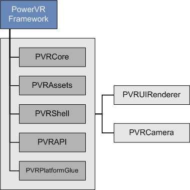

Framework
Contents: Overview | Building | Creating an Application | Guidelines and Recommendations
Overview
The PowerVR Framework is a complete framework source code, re-written from scratch and targeted for all major platforms, such as Windows, Linux, and OS X, as well as Android and iOS mobile platforms. The key strength of the PowerVR Framework is that it is platform-agnostic, meaning that with the same code, it is possible to compile for different platforms without changing source code.
The majority of the code is written in C++ and tested across different compilers (namely Visual Studio 2010, GNU Compiler Collection and Clang) using modern styling and in general provides a complete framework for application development. There is also the supporting per-platform code (Objective-C code for iOS and OS X, some Java code for Android, etc.), and project files.
The Framework consists of separate libraries that are divided by functionality, as shown in the figure below. These modules are provided to be compiled as static libraries, but you can choose to use them differently, if needed.
PVRCore
View source code documentation
This is the supporting code of the library to leverage for your own use. PVRCore is also used by the rest of the Framework and because of that, all examples using any other part of the Framework should link with PVRCore.
PVRAssets
View source code documentation
This is the Framework’s asset code. It includes classes and helpers for scene representation, asset loading code, etc. PVRAssets supports the loading of POD files, PVR and PFX materials format, as well as limited support for a number of texture formats.
PVRShell
View source code documentation
This is the native system abstraction (event loops, surfaces, windows, etc.) which greatly simplifies cross-platform compatibility. Essentially, PVRShell provides you with useful scaffolding for cross-platform development.
PVRApi
View source code documentation
This is the actual Graphics API abstraction. PVRApi is a very powerful framework that allows cross-API development. In combination with PVRShell, this provides remarkable support to write code intended to run across different platforms, utilizing different APIs.
PVRPlatformGlue
View source code documentation
This helper project provides necessary abstraction between the underlying system (PVRShell) and graphics API (PVRApi).
PVRUIRenderer
View source code documentation
This text and image 3D printing code can also be used as a text or sprite renderer code. It is built on top of PVRApi, making it inherently API-agnostic and contains code for using different parts of fonts to display text.
PVRCamera
View source code documentation
This is the code for interfacing with the camera of mobile platforms.
Building
All PowerVR examples for all platforms will build the PowerVR Framework libraries they require. If you use them, or base your own code on them, you should not need to have to build the Framework separately. The PowerVR SDK usually also contains pre-built versions of the libraries in the folder [SDK]/Framework/Bin/[Platform], where [SDK] is the SDK root and [Platform] is the name of your platform of interest - this is where you would normally link.
All modules can be built separately, by navigating to [SDK]/Framework/[ModuleName]/Build/[Platform], where [ModuleName] is the name of the specific module of the PowerVR Framework. You can then run a build command as normal for that platform, although this is not required, as building the examples automatically builds the Framework.
Creating an Application
To create a typical application, please follow these steps:
- Firstly, either build the Framework components previously mentioned (by moving to the corresponding /Builds/[Platform] or add their build scripts and projects to your own
- Create a project or build script (Visual Studio, Makefile, etc.) for your platform. We suggest taking one of the scripts from the following location as base:
- Add include directories:
- /Framework
- /Builds/Include
- Add library directories:
- Framework/Bin/[Platform]
- (Optional) /Builds/[Platform]/Lib
- Link against static libraries:
- (Optional) PVRUIRenderer
- PVR[API]
- PVRPlatformGlue
- PVRShell
- PVRAssets
- PVRCore
- Create your application files. For a single CPP file, your includes will usually be:
- PVRShell/PVRShell.h
- PVRApi/PVRApi.h
- PVRApi/AssetManager.h (if you plan to use the AssetManager for loading)
- PVRUIRenderer/PVRUIRenderer.h (if you plan to use the UIRenderer)
- Write the skeleton of your application (see description of PVRShell)
Examples/[Intermediate/Advanced]/[API]/Builds/[Platform], where [Intermediate/Advanced] is the folder for either the intermediate or advanced example applications supplied with the SDK. In more detail:
Guidelines and Recommendations
Below are a set of guidelines and recommendations you might want to consider when using PowerVR Framework:
- If you need to use the native API (for example OpenGL ES), we recommend using the header PVRApi/[API]/[API]Bindings.h. This is a specially crafted binding for your specific API. For example, for OpenGL ES, OpenGLESBindings.h it will provide you with a set of function pointers conveniently placed in the gl::namespace. These functions follow the OpenGL ES specification, and can be called normally e.g. gl::MapBuffer(…). These function pointers get populated at runtime, allowing a unified entry point to the native API. Similarly, a set of function pointers for extensions are present in the glext namespace. The function pointers get populated at initialisation time, but their use can be queried per-context, at runtime.
- Add an AssetManager member to your class and use it for loading Models, Textures, Shaders and other files that may be duplicated. The AssetManager will cache files and make sure you do not double-load files. Initialize the AssetManager with your application class ((initialise(*this)), and use it to one-step load Textures, Models, Shaders and other objects that will have to be read from disc.
- The pvr::assets::Model class contains all the information you need for drawing, including cameras, lights, and potentially effects. Follow one of the PowerVR SDK examples (e.g. IntroducingPOD and IntroducingPFX) to understand its basic use, including getting out of a Model the information about the data layouts of its Meshes, etc.
- Many utility functions and methods are built-in, so that you can easily cover most common use cases. For example:
- getLayoutIntoPipeline function allows you to quickly match a Mesh to a specific custom shader by providing what your shader's "required semantics" are and at which binding points (attributes) to assign these. This function will add the entire vertex definition to the pipeline descriptor.
- This same functionality allows you to simply copy the whole data of the Mesh into a VBO, bind it and draw.